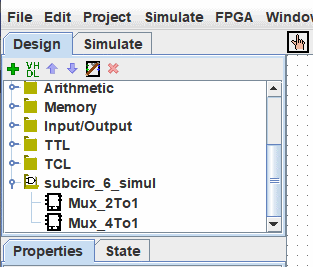

Logisim 库
每个 Logisim 项目都会自动成为一个库，可以加载到其他 Logisim 项目中：只需将其保存到文件，然后在另一个项目中使用菜单 | 项目 |→| 加载库 |→| logisim-evolution 库... |。第一个项目中定义的所有电路都会作为子电路提供给第二个项目。此功能允许您在不同项目之间复用通用组件，也可以与朋友（或学生）分享常用组件。
下图是我们的项目作为库加载后在资源管理器窗格中的样子。

注意：该库不得包含与项目中已有电路同名的电路。
每个项目都有一个指定的主电路，可以通过菜单 | 项目 |→| 设为主电路 | 将当前电路设为主电路。它的唯一意义在于：主电路是您首次打开项目时显示的电路。新建文件中电路的默认名称（main）没有任何特殊含义，您可以随意删除或重命名该电路。
加载 Logisim 库后，您可以查看电路并操作其状态，但 Logisim 会阻止您修改电路设计以及文件中存储的其他数据。
如果您想修改已加载 Logisim 库中的电路，需要在 Logisim 中单独打开它。保存后，其他项目通常会立即自动加载修改后的版本；如果没有，可以在资源管理器窗格中右键单击库文件夹，然后选择 | 重新加载库 |。
下一节： 用户指南。